Automation - Mechatronic
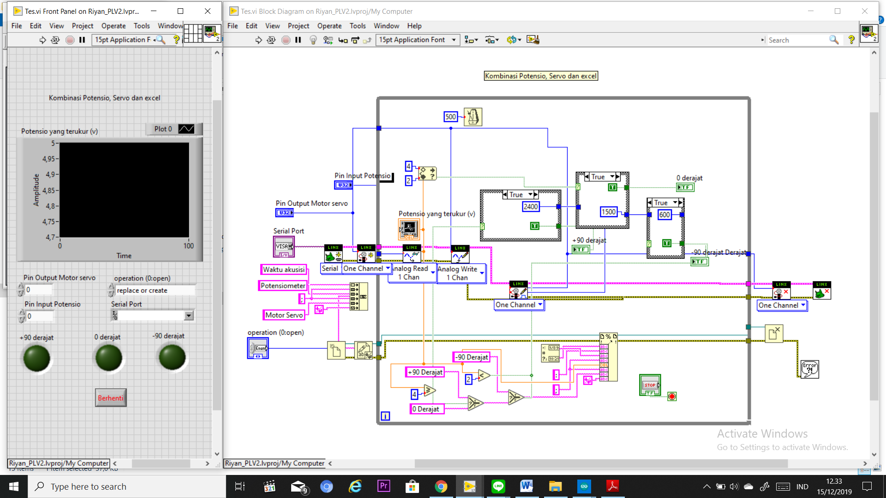
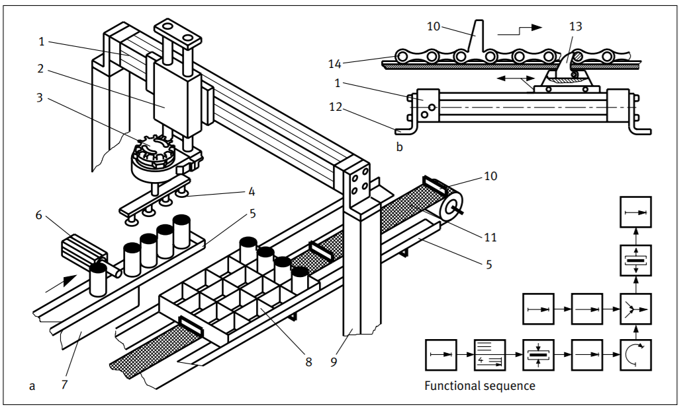
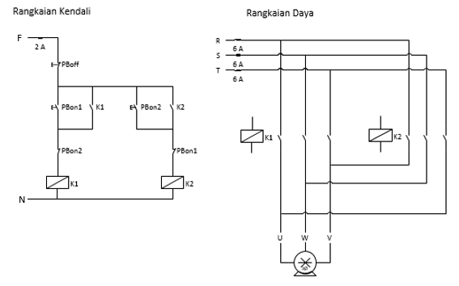
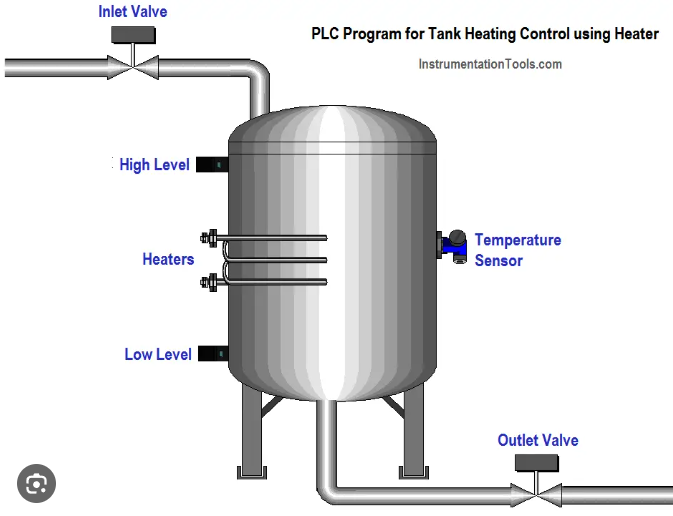
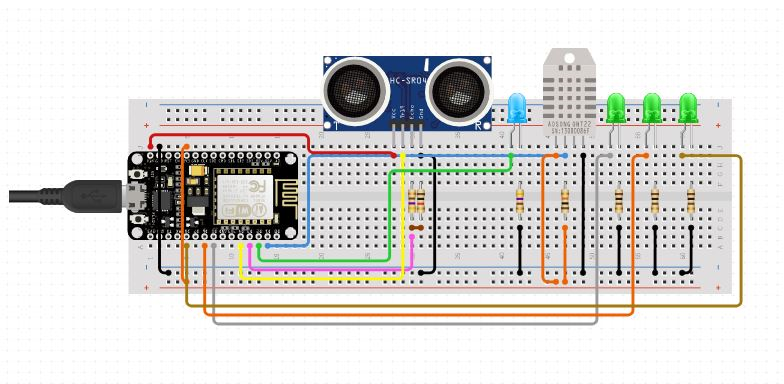
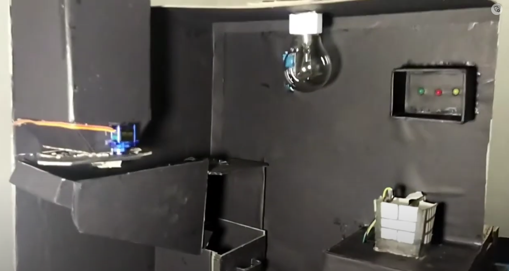
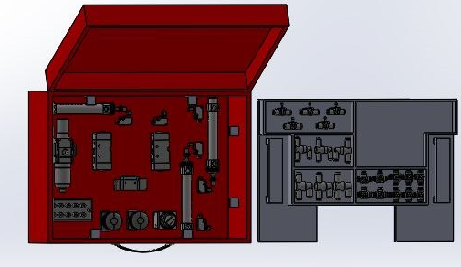
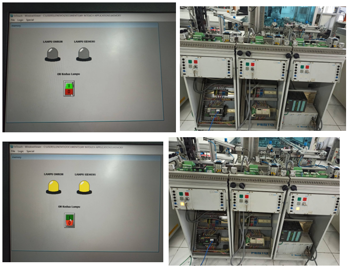
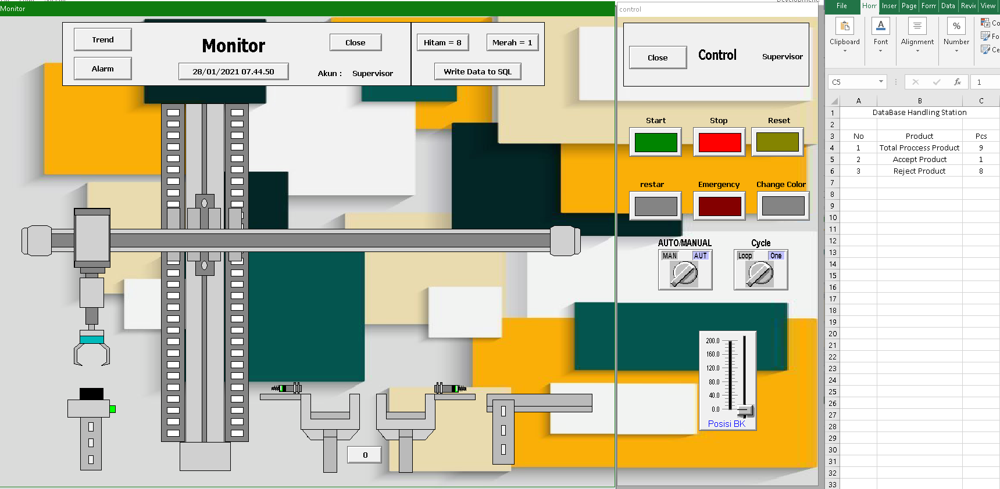
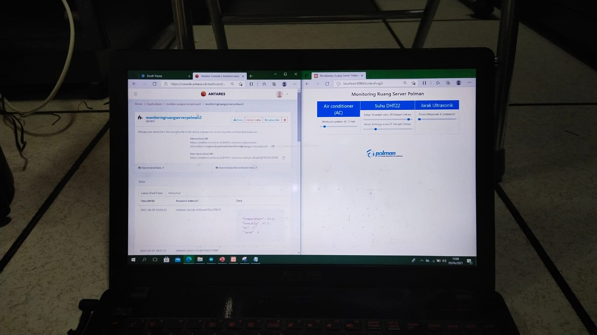
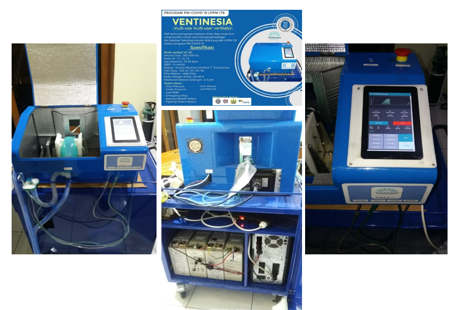
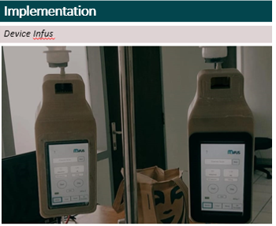
I am a fresh graduate from Bandung Manufacturing Polytechnic with Automation and Mechatronics major. I have experience in a research project as an engineer In Sibernetika teknologi industri, Puskomedia Polman and MIFUS. I have some organization experience as a chairman of commission in DPM-KM Polman Bandung and Majelis Tinggi Himamo Polman Bandung.
Because of that I am good at leadership skill, communication skill, critical thinking, electronics, electricity, pneumatics, motor control, data acquisition, SCADA, PLC, IoT, microcontrollers, dashboards and Production Planning Control